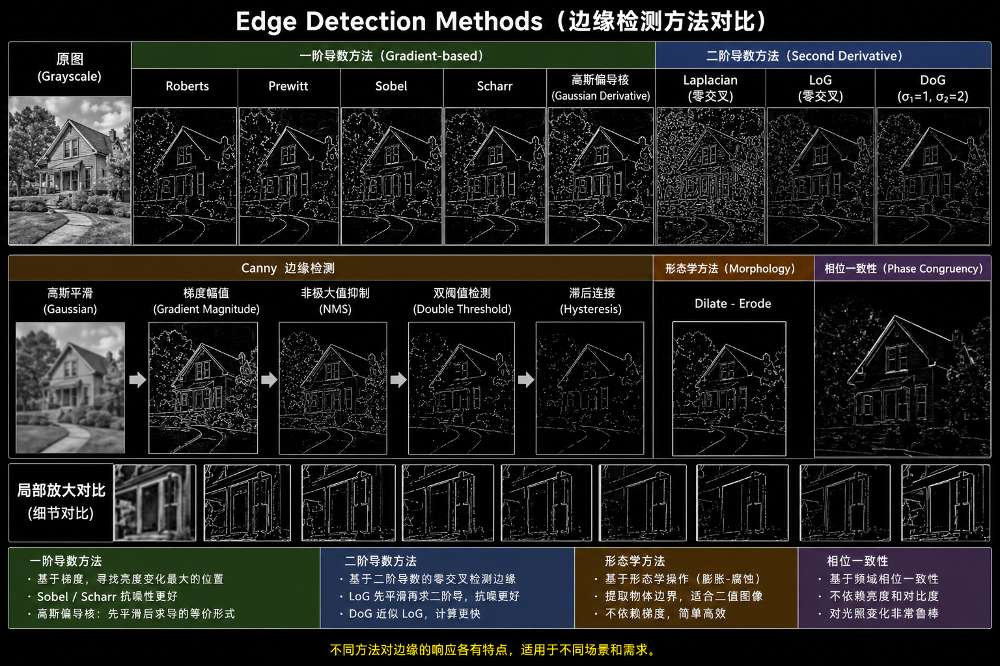

Edge Detection
An edge is defined as a location in an image where the signal changes abruptly, typically corresponding to local maxima in gradient magnitude.
The main goal of edge detection is to: - Identify locations where intensity or structural changes occur These usually correspond to: - Significant gradient variations - Discontinuities in the signal
Sources of Edges
Edges typically arise from:
- Geometric discontinuities (object boundaries)
- Surface normal changes (3D shape variation)
- Material or color changes
- Illumination changes
In computer vision, edges are commonly computed using convolution-based differentiation (gradient estimation).
| -1 |
| +1 |
| -1 | +1 |
First-Order Derivative Methods (Gradient-based)
Core Idea:
First derivative = gradient → Edge = locations with large gradient magnitude
Prewitt
| -1 | 0 | +1 |
| -1 | 0 | +1 |
| -1 | 0 | +1 |
| -1 | -1 | -1 |
| 0 | 0 | 0 |
| +1 | +1 | +1 |
- 3×3 fixed convolution kernels
- Uses uniform weights to approximate derivatives
- Characteristics:
- Simple and efficient
- Sensitive to noise
- Moderate accuracy
Sobel
| -1 | 0 | +1 |
| -2 | 0 | +2 |
| -1 | 0 | +1 |
| -1 | -2 | -1 |
| 0 | 0 | 0 |
| +1 | +2 | +1 |
- Improvement over Prewitt by introducing center weighting
- Characteristics:
- Higher weight on central pixels
- Better noise robustness
- Separable filter (efficient implementation) -> Can be interpreted as:
- smoothing kernel + differentiation kernel \([-1, 2, -1]^T · [-1, 0, +1]\)
Scharr
| -3 | 0 | +3 |
| -10 | 0 | +10 |
| -3 | 0 | +3 |
- Improved version of Sobel
- Characteristics:
- Better rotational symmetry
- More accurate directional estimation
- Improved stability over Sobel
Roberts
| 0 | +1 |
| -1 | 0 |
| 1 | 0 |
| 0 | -1 |
- Computes diagonal differences (45° directions)
- Characteristics:
- Highly sensitive
- Very noise-sensitive
- Suitable for fast, coarse edge detection
Gaussian Derivative Filters
- When images contain noise:
- Apply Gaussian smoothing (denoising)
- Compute derivatives
- Since both operations are convolutions, they can be combined into:
- Derivative of Gaussian (DoG kernel in continuous form)
- a first-order derivative filter that already incorporates smoothing
- Characteristics:
- Combines smoothing and differentiation
- Fundamental component of the Canny detector
Second-Order Derivative Methods (Second derivative)
Core Idea:
Edge = zero-crossings of the second derivative
Laplacian
- Direct computation of second-order derivatives
- Isotropic (direction-independent)
- Characteristics:
- Highly sensitive to noise
- Amplifies high-frequency components
Second derivative = enhanced high-frequency signals + noise = high-frequency content → Laplacian acts like an ‘amplifier of noise’.
Laplacian of Gaussian (LoG)
- Standard pipeline:
- Gaussian smoothing (denoising)
- Laplacian (second derivative) → detect structural changes, enhance edges
- zero-crossing (edge detection)
- First smooth, then detect changes
- Scale control
- small \(\sigma\) → fine detail edges
- large \(\sigma\) → only large structures are preserved
- Characteristics:
- more stable than Laplacian
- a classical theoretical mode
Approximation Methods
Difference of Gaussian (DoG)
Core Idea:
Approximates LoG using two Gaussian blurred images: \(DoG = G(\sigma_1) − G(\sigma_2), where \sigma_2 > \sigma_1\)
- Gaussian acts as a blur operator:
- small \(\sigma\) → slight blurring
- large \(\sigma\) → strong blurring
- Subtracting a strongly blurred image from a slightly blurred image results in nearly zero difference in flat regions, while producing large differences and strong responses around edges, thereby enabling the extraction of edge information.
- Characteristics:
- Computationally efficient
- Multi-scale representation
- Foundation of SIFT feature detection
Practical Methods
Canny
-
Detection pipeline
-
Gaussian Smoothing
- Apply Gaussian filtering to the image to suppress noise and reduce errors in subsequent gradient computation.
-
Gradient Computation
- Compute the gradient magnitude and direction using derivative operators (e.g., Sobel operators or Gaussian derivative filters).
-
Non-Maximum Suppression (NMS)
- Perform local maximum detection along the gradient direction and retain only potential edge pixels, producing thin edges.
-
Double Thresholding
- According to the high and low thresholds, pixels are classified into:
- strong edges
- weak edges
- non-edges (suppressed)
- According to the high and low thresholds, pixels are classified into:
-
Hysteresis
- Preserve weak edges connected to strong edges and remove isolated noise points.
-
Non-Maximum Suppression
- Compare the two neighboring pixels along the gradient direction (quantized directions such as 0°, 45°, 90°, and 135°). If the current pixel has the maximum gradient magnitude, it is retained.
Hysteresis Thresholding
- High threshold: detected pixels are classified as strong edges, which are always retained.
-
Low threshold: detected pixels are classified as weak edges, which may correspond to either edges or noise.
-
The final result is determined based on connectivity:
- Only weak edges connected to strong edges are preserved.
- Weak edges that are not connected to strong edges are suppressed (removed).
👉 The essence is to exploit the spatial continuity (connectivity) of edges, preserving true edges while suppressing noise.
Summary
Canny = Gaussian smoothing → Gradient → NMS → Double threshold → Hysteresis
- good detection
- good localization
- single response
Non-Gradient Methods
Morphology
Core Idea:
Based on morphological operations: \(Edge = Dilate(I) - Erode(I)\)
- Dilation enlarges bright regions and makes objects thicker.
- Erosion shrinks bright regions and makes objects thinner.
-
Dilate − Erode ⇒ the difference between expansion and contraction highlights the boundary regions.
-
Characteristics:
- simple
- suitable for binary / industrial images
- does not rely on gradients
Phase Congruency
Core Idea:
Edge = locations where phases are congruent across multiple scales in the Fourier domain.
-
An image can be decomposed into:
- different frequencies
- different phases
-
Determine whether the signal structures are aligned.
- Edge points → all frequency components (low-frequency + high-frequency) are aligned at the same location → energy is concentrated.
- Non-edge points → frequency components are not synchronized and phases are disordered → unstable and dispersed.
-
Characteristics:
- independent of image brightness
- highly robust to illumination changes
- close to human perception
